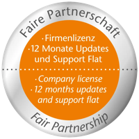

|
CANopen (FD) Master Protocol Stack
Making your systems precise, reliable and high-quality - Version 6.04.00
|
|
CANopen (FD) Master Protocol Stack
Making your systems precise, reliable and high-quality - Version 6.04.00
|
This is the documentation for the CANopen (FD) Master protocol stack, developed by MicroControl GmbH & Co. KG.
The protocol stack supports both, classical CANopen as defined by the standards CiA 301 and CANopen FD as defined by the standard CiA 1301. The behaviour can be selected during run-time.
The CANopen (FD) Master protocol stack offers a variety of configuration options and forms the basis for controlling and monitoring complex CANopen (FD) networks. The functionality of the different CANopen (FD) services can be configured individually in order to achieve an optimal performance for different platforms and applications.
First steps to use the CANopen (FD) Master protocol stack are explained in Getting started.
The CANopen (FD) Master API overview give a detailed description of the protocol stack. The main requirements of the project are explained and linked to all necessary header files.
The CANopen (FD) Master Code Examples contains various examples that are provided with the CANopen (FD) Master protocol stack.
Users of MicroControl protocol stacks benefit from 12 months free support from date of purchase. A subsequent optional maintenance agreement will contain automatic updates of the software. If desired, MicroControl offers “on site”support during initial start-up of your system. Additional or supplementary services may be agreed upon in individual maintenance agreements. Please send your support requests to suppo.nosp@m.rt@m.nosp@m.icroc.nosp@m.ontr.nosp@m.ol.ne.nosp@m.t together with the version information of the CANopen (FD) Master protocol stack (i.e. the value of the symbols COM_VERSION_MAJOR and COM_VERSION_MINOR. |  |